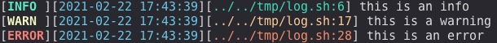

Shell 脚本入门
Table of Contents
1 关于 shell
- shell 不是一堆 bash 命令的集合
- shell 是一个脚本语言，类似 python， 充当浇水
2 如何解决 90% 的问题
3 常用函数
3.1 日志
LOG_INFO() {
set +x
local msg=$*
printf '[\033[1;32mINFO \033[0m]'
printf '[\033[0;34m%-s\033[0m]' "$(date +'%Y-%m-%d %H:%M:%S')"
printf '[\033[0;32m%-s:%d\033[0m]' "$0" "$LINENO"
printf ' %-s\n' "${msg}"
[[ ${DEBUG_MODE} -gt 0 ]] && set -x || set +x
}
LOG_WARNING() {
set +x
local msg=$*
printf '[\033[1;33mWARN \033[0m]'
printf '[\033[0;34m%-s\033[0m]' "$(date +'%Y-%m-%d %H:%M:%S')"
printf '[\033[0;33m%-s:%d\033[0m]' "$0" "$LINENO"
printf ' %-s\n' "${msg}"
[[ ${DEBUG_MODE} -gt 0 ]] && set -x || set +x
}
LOG_ERROR() {
set +x
local msg=$*
printf '[\033[1;31mERROR\033[0m]'
printf '[\033[0;34m%-s\033[0m]' "$(date +'%Y-%m-%d %H:%M:%S')"
printf '[\033[0;31m%-s:%d\033[0m]' "$0" "$LINENO"
printf ' %-s\n' "${msg}"
[[ ${DEBUG_MODE} -gt 0 ]] && set -x || set +x
}
LOG_INFO "this is an info"
LOG_WARNING "this is a warning"
LOG_ERROR "this is an error"
效果：

4 常用操作
4.1 参数
- 函数入参取值
$N- 函数入参取全部
$*，空格分割- 函数入参偏移
shift N偏移后取全部取的是偏移后的值，类似 python *args- 取入参数目
$#- 取shell内最近一个线程执行状态
$?- 取shell内最近一个线程的线程号
$!
4.2 异常捕捉
通过
||或&&实现异常捕捉echo ${input} || exit ${EXIT_INPUT_ERROR}
高级一点的方式，统计失败个数
FAIL_COUNT=0 echo ${input} || let "FAIL_COUNT+=1"
- 通过
trap异常捕捉1